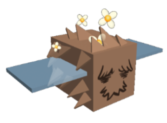

There are many different updates but i'm going to talk about the seasonal updates in this category.There is usually an update in the summer where a event bear called Sun Bear gives you a certain amount of quests and once you complete all of the quests then Sun Bear will give you a special reward.And every year its a different problem.Theres another update called Beesmas update and its where Bee Bear (Polar Bears cousin)gives you quests and once you comples them you get a special reward.Theres another update where you have to do a bee swarm version kind of egg hunt for spring.
The update that is going on right now in 2020 is the bee swarm egg hunt 2020 witch has a connection with other games and part of Roblox.The bears asked Sun bear to bring the eggs but the eggs hatched by the time Sun bear took out the eggs.So then you'll have to capture the chicks the chicks you can go talk to Sun bear.Once you complete his first quest witch is help three bears capture chicks,then you will have to wait a few days until the next quest.(Only waiting a few days applys to easter quests.)
Visit this really good wiki on bee swarm topics
Currently the new bee that is coming out is called the Fuzzy bee.During Beesmas the Mythical bees came,they are called the Tadpole,Vector,and Spicy bees.
